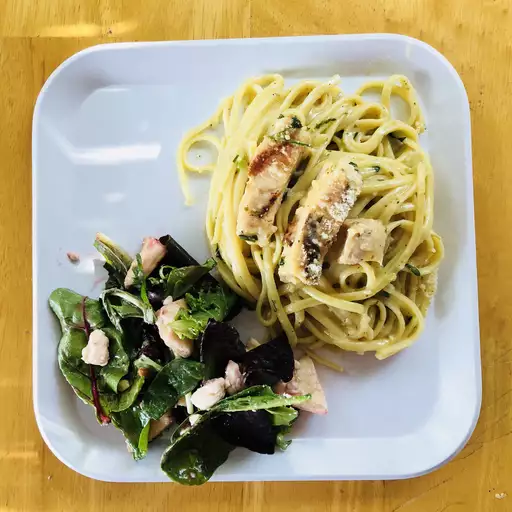

Lemon Pasta
Home

Grilled chicken on a bed of linguini with a buttery lemon sauce
Savory grilled chicke and herbs on a bed of sweet linguini and a buttery lemon sauce. This subtle sweetness will be quite refreshing on a summer evening.
Ingredients
- 3 tablespoons butter
- 2 tablespoons olive oil, or more as needed
- 1 small onion, chopped
- 2 cloves garlic, minced, or more to taste
- 2.5 cups milk
- 3 cubes chicken bouillon
- 1/4 teaspoon salt
- 1/4 teaspoon ground black pepper
- 1 cup cold water
- 2 tablespoons cornstarch
- 1/2 pound seasoned grilled chicken chunks
- 1 (16 ounce) package linguine pasta
- 1/4 cup lemon juice
- 3 tablespoons chopped fresh parsley
- 1 teaspoon lemon zest
- 1/2 cup grated Parmesan cheese, or to taste
Directions
- Heat butter and olive oil together in a saucepan over medium heat; cook and stir onion and garlic until tender but not browned, about 5 minutes. Add milk, bouillon, oregano, salt, and pepper to onion mixture; bring to a boil. Reduce heat to medium and cook sauce for 5 minutes.
- Whisk cold water and cornstarch together in a bowl until smooth. Mix cornstarch mixture and chicken into sauce; cook until heated through and thickened, about 5 minutes.
- Bring a large pot of lightly salted water to a boil. Cook linguine at a boil until tender yet firm to the bite, about 11 minutes; drain.
- Turn heat under saucepan with sauce to low; add lemon juice, parsley, and lemon zest and cook until heated through, 1 to 2 minutes. Add pasta, toss to coat, and transfer to a serving bowl; top with Parmesan cheese.